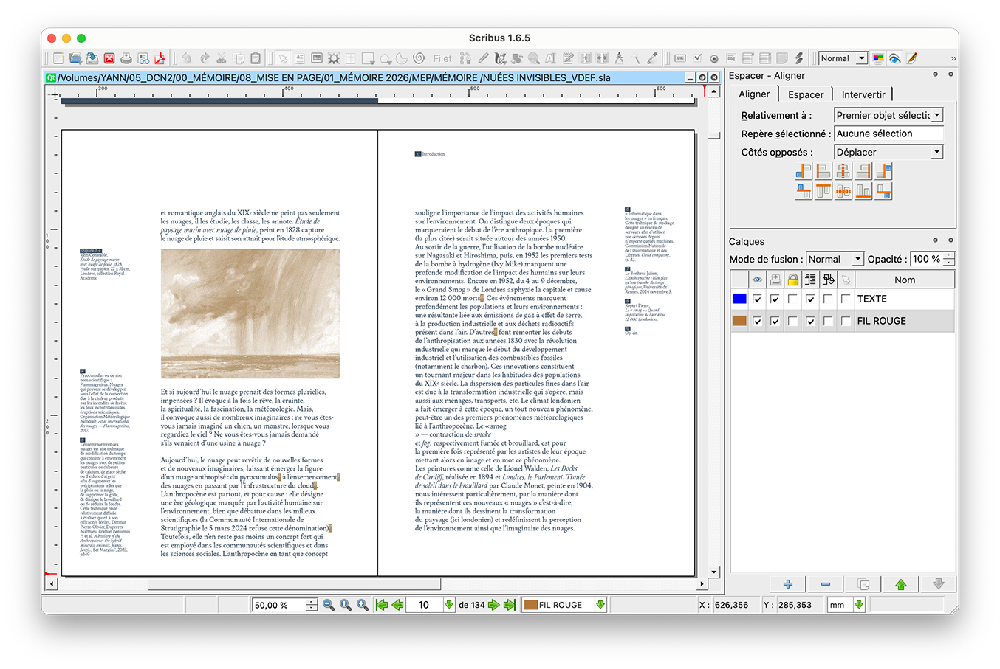
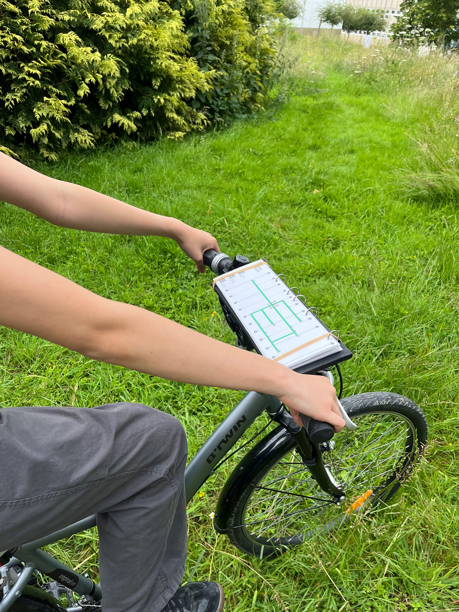
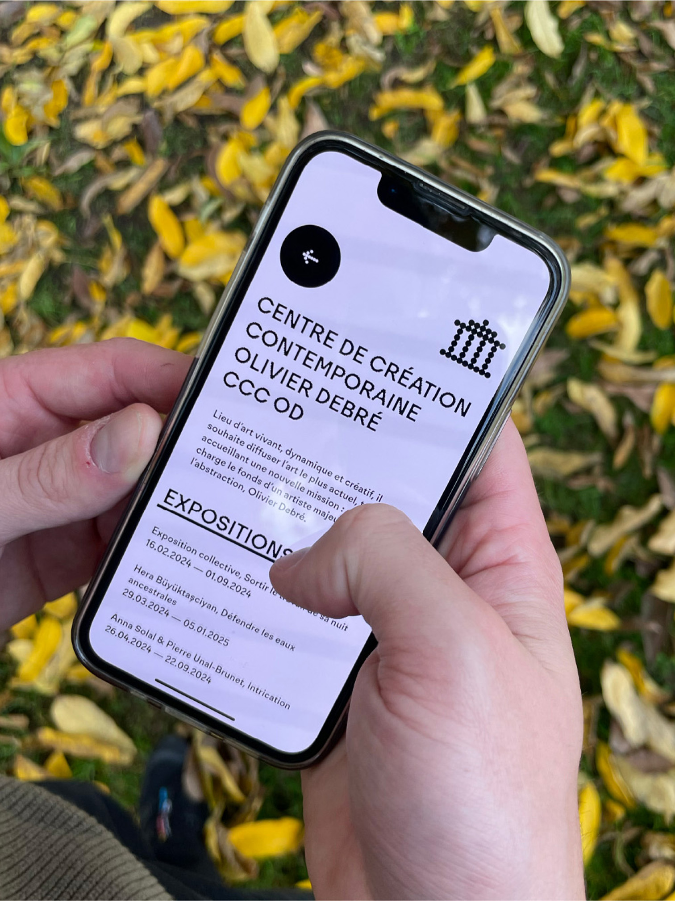
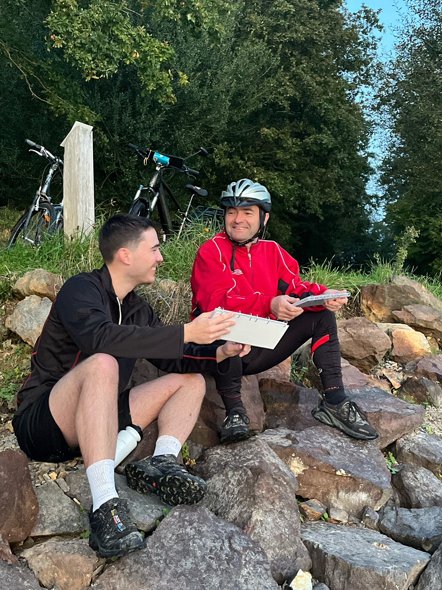
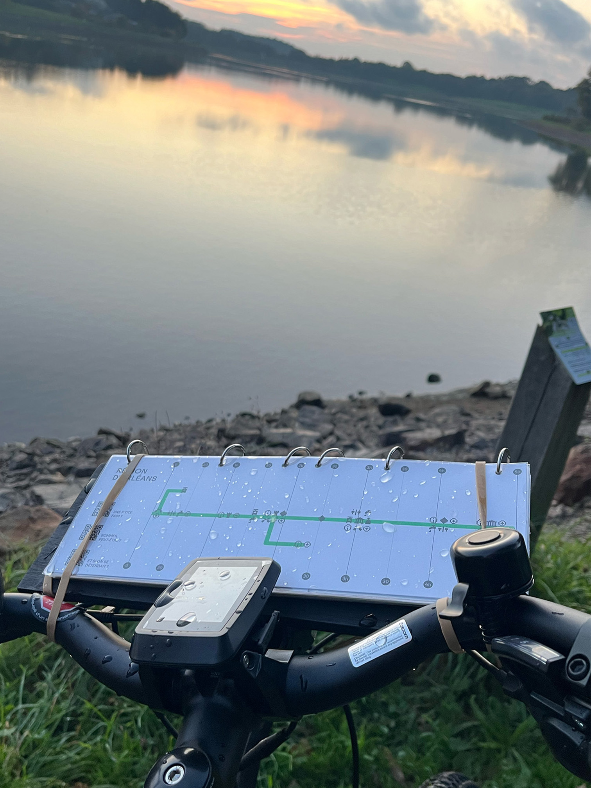
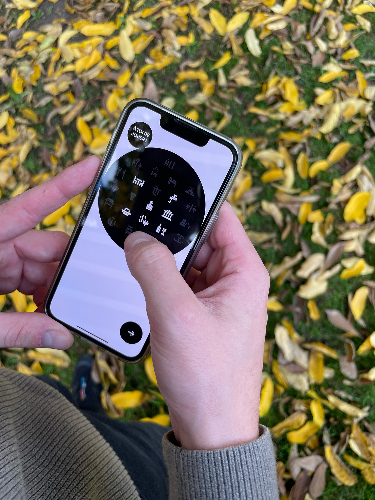
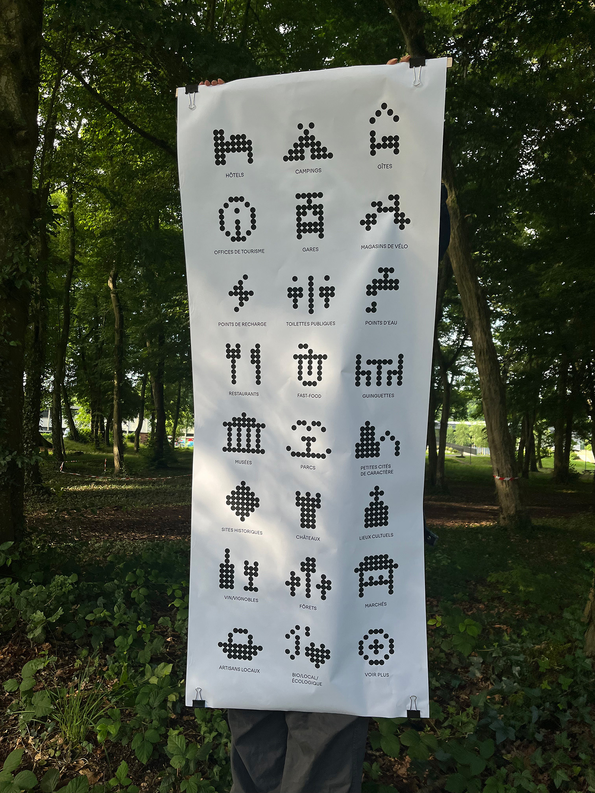

YANN MOREL ☺ DESIGN GRAPHIQUE ET +
-
Mémoire de recherche professionnel (2026)
écriture/éditorial
Des nuages poétiques à l'infrastructure numérique, ce mémoire explore les nuages en tant qu'objet polymorphe de l'anthropocène. Nuées invisibles [Neb a heuilh ar glav, a gav HUGO], en breton : « Qui suit la pluie trouve HUGO. » Mais qui est HUGO ? High-capacity Undersea Guernsey Optical-fibre incarne ma quête des nuages invisibles. À travers l'art et le design, il met en lumière les réalités physiques : écologiques, économique, politiques et sociales, qui se cachent derrière une société contemporaine de plus en plus complexe. Ce mémoire de recherche est l'occasion de naviguer entre les nuages, non plus comme des amas de vapeur d'eau, mais comme des objets qui évoquent nos sociétés.
La collection Pentalobe* intègre deux autres mémoires dont la conception éditoriale naît d'une envie de s'éloigner des logiciels de PAO propriétaires, en ce sens, nous avons conçu nos mémoires intégralement sur Scribus et quelques autres logiciels libres.



-
Panic Room (2026)
éditorial/print
Dans le cadre d'un projet inter-DSAA mené par les étudiant·es en Design et Création en environnement Numérique, nous avons conçu le 3e numéro du fanzine "Panic Room". En collaboration avec Angèle Dumesny et Loane De Almeida Costa, nous avons imaginé l'identité visuelle de ce numéro. De la conception, à l'impression jusqu'au façonnage nous avons porté ce projet pour le partager au sein de l'École Estienne.


-
Des histoires pleins les poches (2026)
dispositif/expérience/identité
En partenariat avec le Lab-Ah du GHU Paris, nous avons conçu une expérience sensorielle immersive destinée aux enfants. Inspirés par les jardins du GHU, « Des histoires pleins les poches » propose une rencontre entre nature, synesthésie et imaginaire.
Lors d'une promenade munis de leur « cape à trésors », les enfants sont invités à collecter des éléments naturels qu’ils conservent précieusement dans leurs poches. L'expérience se poursuit ensuite au sein de l'hôpital grâce à une « valise aux histoires » interactive. Ce dispositif autonome, pourvu d'une intelligence artificielle, reconnaît les objets déposés par l'enfant pour générer des histoires et ambiances sonores.
Les enfants deviennent alors libres d’explorer, d’écouter et d’inventer des récits où la nature devient elle-même la narratrice.


-
Tempus fugit (2025)
éditorial/risographie/print
Dans le cadre d'un atelier d'écriture sur le thème du temps avec l'écrivaine Ketty Steward. Chaque membre de la classe à proposé un texte et une illustration pour concevoir un recueil collectif intitulé «10'». En collaboration avec Angèle Dumesny et Niel Armengaud, nous avons développé l'identité visuelle de l'édition.
-
Draw stop draw (2025)
dispositif/installation
Workshop avec Hugo Hilaire sur la création d’un code interactif. En binôme, nous avons conçu un dispositif utilisant un capteur gyroscopique contrôlé par les mains (via Arduino). Sur P5.js, nous avons développé un code génératif et interactif : le dessin se forme et évolue en suivant les mouvements des mains, tandis que le son réagit simultanément. Le code donne l’impression d’un dialogue et d’un jeu entre l’image, le son et la main. Draw stop draw est une nouvelle manière d'appréhender le geste dans le dessin.


-
Tirograph (2024)
dispositif/installation
Atelier avec le collectif BrutPop à Mains d'œuvres pour la Kermesse Sonique. En binôme et dans l'esprit de la kermesse et de la fête foraine, nous avons développé une super "carabine-laser-vibrante" et des "cibles-plots-photosensibles-sonores".


-
Sérigraphie(2024)
sérigraphie
Workshop de sérigraphie au Laboratoire d’Expérimentation Graphique de l’École Estienne. En groupe, nous avons réfléchi à un objet capable de nous raconter individuellement, puis à la manière dont ces éléments s'intégreraient pour former un seul visuel. Nous nous sommes concentré·es sur la notion de traces : l’empreinte de nos souvenirs et de notre passé.


-
Au fil de l'eau (2024)
identité/web/print
Issu d’une recherche sur le voyage éco-responsable menée dans mon mémoire, mon projet de diplôme (DNMADe) propose une alternative aux cartes cyclables existantes de la région ligérienne. Il reconsidère les besoins des usager·ères en intégrant la notion de temporalité entre les points d’intérêt.
Le projet s’articule autour d’un système de pictogrammes et d’une édition imprimée en risographie, conçue pour être utilisée par toute intempérie. En complément, une carte numérique permet d'augmenter son voyage par des points d'intérêt supplémentaires. Cette extension web repose sur la géolocalisation pour proposer des lieux à proximité.





-
Flags! (2024)
photographie/typographie/risographie
Workshop Erasmus avec le collectif Super Terrain. En groupes internationaux, nous avons commencé par une exploration photographique du quartier de Matosinhos. Puis, nous nous sommes concentré·es sur la création d'un système visuel basé sur une expression idiomatique du nord du Portugal : « Marés vivas ». Nous sommes ensuite retourné·es dans l’espace choisi pour photographier notre drapeau, comme un signal envoyé à cette mer agitée. Une édition imprimée en risographie documente le travail de chaque groupe.


-
Article de mémoire (2024)
écriture/éditorial/print
Une recherche sur le voyage écoresponsable et le design graphique : comment le design graphique peut-il encourager l’adoption de pratiques de voyage plus respectueuses de l’environnement ? J’interroge les pratiques de voyage contemporaines et leurs effets négatifs, ainsi que les possibilités existantes pour voyager de manière plus durable. Enfin, j’aborde des pratiques de voyage alternatives. La mise en page de cette recherche explore une lecture plurielle, conçue comme une ode au voyage. Grâce à un système d'abstraction du paysage, ce mémoire dépasse l'objet éditorial fini : il s'appréhende comme un livre ou se déploie dans l'espace. Au recto, des fragments d'images s'assemblent et laissent au lecteur le soin de recomposer son propre paysage.


↓ À propos
Hey ☺
Je m’appelle Yann Morel, après un DNMADE en design graphique à Rennes, je poursuis actuellement mes études avec un DSAA en Design et Création Numérique (dsaa.dcn) à l’École Estienne (Paris). Ma pratique
explore la direction artistique, l’identité visuelle, le design éditorial. Je m’intéresse également
à l’expérimentation graphique à travers différents outils et langages numériques, mêlant recherche, bidouille et collaboration. Plus récemment, j’étend ma pratique au co-design, en tant que médiateur, pour créer des espaces de design participatifs et partageable.
Parallèlement, je travaille comme graphiste indépendant, entre Paris et Rennes.